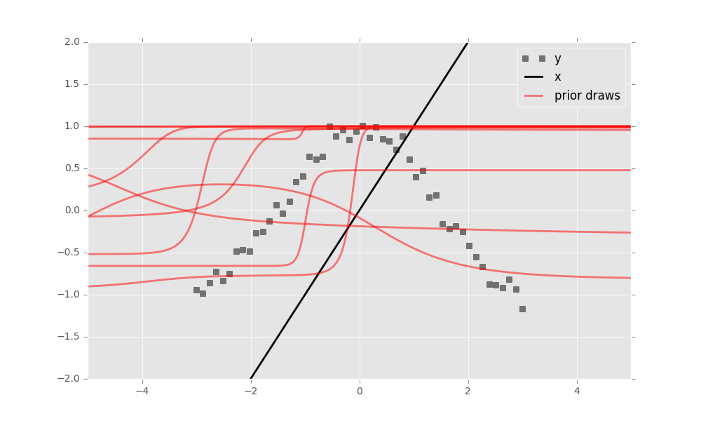

Edward
 Home
Getting Started
Delving In
Tutorials
API
Advanced
Design Philosophy
Developer Process
Troubleshooting
License
Home
Getting Started
Delving In
Tutorials
API
Advanced
Design Philosophy
Developer Process
Troubleshooting
License

Getting Started
Getting started with Edward is easy.
Quick Installation
To install the latest stable version, run
pip install edwardTo install the latest development version, run
pip install -e "git+https://github.com/blei-lab/edward.git#egg=edward"See the troubleshooting page for detailed installation instructions.
Your first Edward program
Probabilistic models are built in Edward using one of the available modeling languages. Here we use TensorFlow to define a Bayesian neural network. It is a neural network with a prior distribution on its weights. (This example is abridged; full source here.)
import tensorflow as tf
from edward.stats import norm
class BayesianNN:
"""Bayesian neural network for regression"""
def __init__(self, layer_sizes):
self.layer_sizes = layer_sizes
self.weight_dims = list(zip(layer_sizes[:-1], layer_sizes[1:]))
self.n_vars = sum((m+1)*n for m, n in self.weight_dims)
def log_prob(self, xs, zs):
# Extract inputs/outputs from data `xs`.
x, y = xs['x'], xs['y']
# Specify the prior on neural network weights `zs`.
log_prior = tf.reduce_sum(norm.logpdf(zs, loc=0, scale=1), 1)
# Specify the likelihood. Its mean is the output of a neural
# network taking `x` as input with weights `zs`.
mus = self.neural_network(x, zs)
log_lik = tf.reduce_sum(norm.logpdf(y, loc=mus, scale=1), 1)
return log_prior + log_likInstantiating this model as
model = BayesianNN(layer_sizes=[1, 2, 2, 1])defines a two-layer Bayesian neural network with \(\tanh\) nonlinearities.
Let’s use a toy dataset of 50 observations with a cosine relationship.
import numpy as np
x = np.linspace(-3, 3, num=50)
y = np.cos(x) + norm.rvs(0, 0.1, size=50)
x = x.reshape((N, 1))
data = {'x': x, 'y': y}
Next, make inferences about the model from data. Edward focuses on variational inference. Specify a mean-field normal approximation
from edward.models import Variational, Normal
variational = Variational()
variational.add(Normal(model.n_vars))The number of latent variables model.n_vars is the number of weights and biases in the neural network.
Run mean-field variational inference. We use 1000 iterations with a batch of 10 datapoints per iteration.
import edward as ed
inference = ed.MFVI(model, variational, data)
inference.run(n_iter=1000, n_minibatch=10)Finally, criticize the model fit. Bayesian neural networks define a distribution over neural networks, so let’s do a graphical check. Draw neural networks from the inferred model and visualize how well it fits the data.

The model has learned the cosine relationship between \(x\) and \(y\).
To learn more about Edward, delve in!
If you prefer to learn via examples, then check out some tutorials.